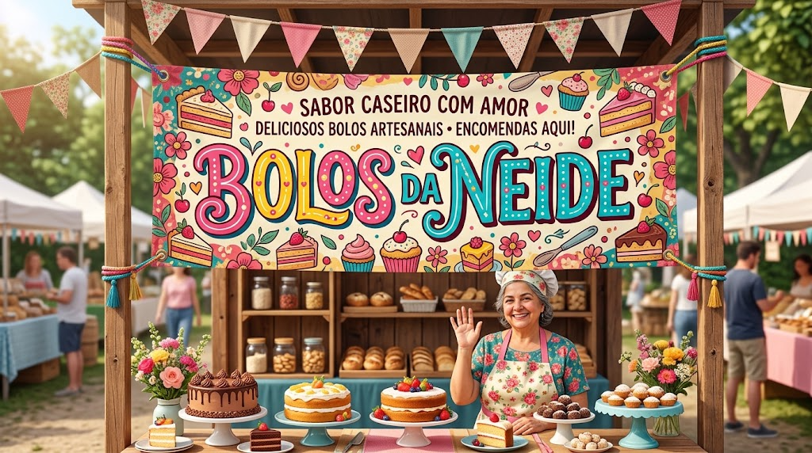
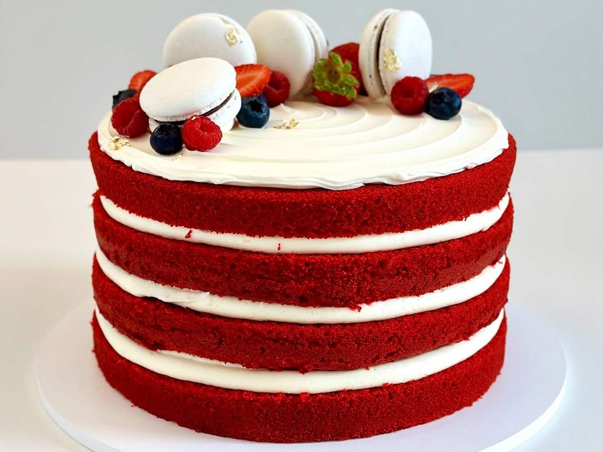
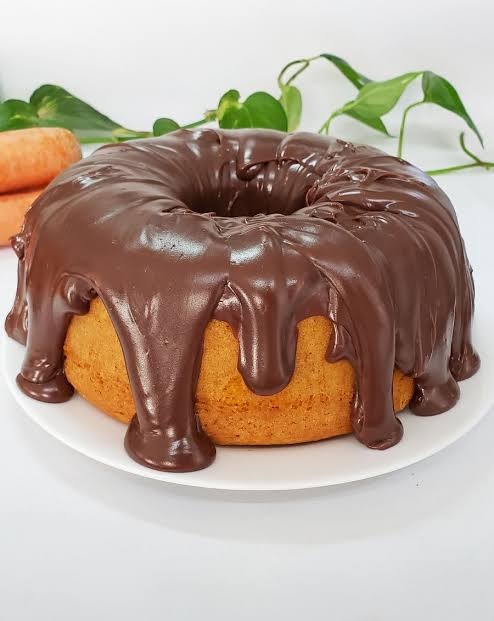
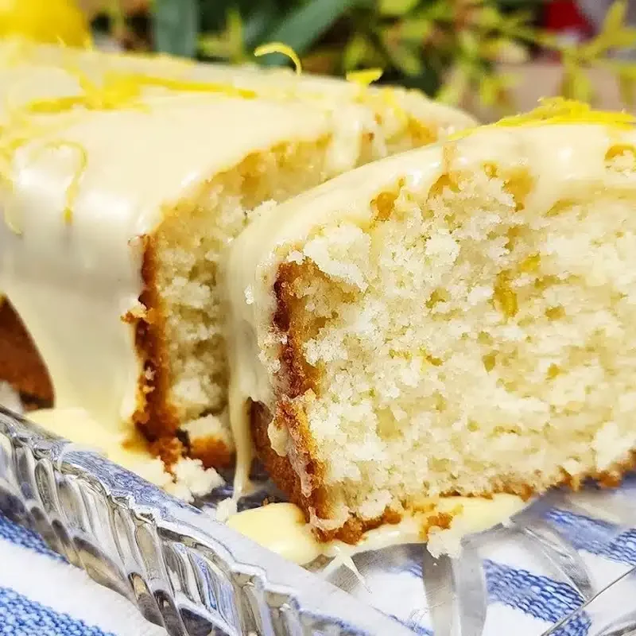
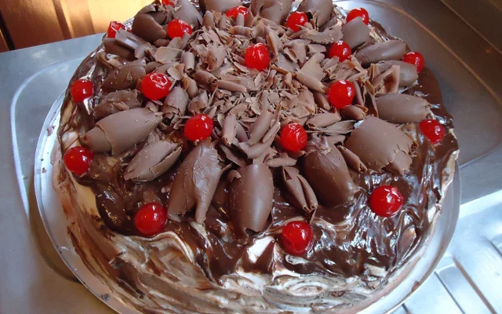
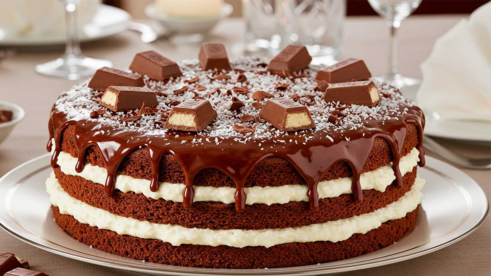

Seja Bem-vindo!
Bolos D. Neide
Conheça os bolos criados pela Dona Neide, criados todos com muito amor, carinho e, principalmente, sabor incomparável!!
Seja Bem-vindo!
Conheça os bolos criados pela Dona Neide, criados todos com muito amor, carinho e, principalmente, sabor incomparável!!


Massa aveludada de cor vermelha intensa com um toque sutil de cacau, recheada e coberta com um creme leve e levemente acidulado de cream cheese. É visualmente impressionante e perfeito para ocasiões especiais.

O clássico da confeitaria brasileira. Massa super fofinha de cenoura com uma cobertura generosa e cremosa de brigadeiro gourmet de chocolate ao leite que transborda ao cortar a primeira fatia.

Massa leve, cítrica e extremamente aromática, enriquecida com sementes de papoula que conferem uma textura crocante e charmosa. Finalizado com uma calda simples de açúcar e suco de limão fresco.

Clássico de origem alemã feito com camadas intercaladas de pão de ló de chocolate denso, chantilly leve, raspas de chocolate meio amargo e um recheio generoso de cerejas em calda.
Um bolo caipira de textura super macia e úmida, feito com milho fresco ou verde. Leva pedaços de goiabada derretida no meio da massa, combinando perfeitamente o salgado do milho com o doce da fruta.

Para os amantes de cocada e chocolate. Camadas de massa molhadinha de cacau 50% recheadas com um beijinho cremoso de coco ralado abundante e cobertas com uma camada firme de ganache de chocolate.
| Produto | Preços | Sabor |
|---|---|---|
| Bolo Red Velvet | R$ 35 | 1 hora |
| Bolo de cenoura com cobertura | R$30 | 3 hora |
| Bolo de limão | R$45 | 1 hora |
| Bolo Floresta Nerga | R$30 | 6 hora |
| Bolo Romeu Julieta | R$38 | 2 hora |
| Bolo Prestígio | R$35 | 7 diás úteis |